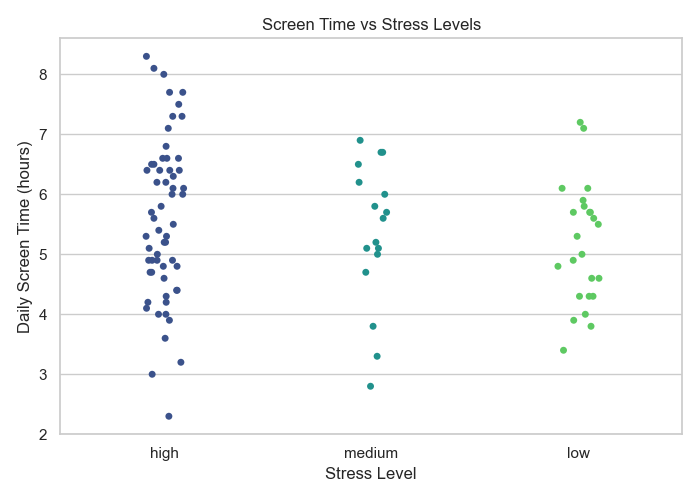

1. Stress Level Distribution (Countplot)
Scatterplot visualization would appear here showing age vs screen time by stress level
A countplot displays the frequency distribution of categorical data. In this case, it shows how many participants reported each stress level.
Chart Type:
Countplot (Bar Chart)
X-Axis:
Stress Levels (Low, Medium, High)
Y-Axis:
Number of Participants (Count)
Purpose:
Show distribution of categorical data
When to Use: When you need to visualize the frequency or distribution of categorical variables.
How to Interpret: Look for which category has the highest bar (most frequent). The relative heights show the distribution of categories in your data.
2. Age vs Screen Time (Scatterplot)
Scatterplot showing relationship between age and screen time
A scatterplot displays values for two numerical variables as points on a 2D plane. This one is enhanced with color to represent a third variable (stress level).
Chart Type:
Scatterplot
X-Axis:
Age (Numerical)
Y-Axis:
Screen Time in Hours (Numerical)
Color:
Stress Level (Categorical)
Purpose:
Show relationship between two numerical variables
When to Use: When you want to visualize the relationship between two numerical variables and potentially a third categorical variable through color coding.
How to Interpret: Look for patterns in the points. An upward trend indicates positive correlation, downward indicates negative correlation. Clusters may indicate groups in the data.
3. Correlation Heatmap
Heatmap showing correlations between variables
A heatmap represents data values as colors. Correlation heatmaps specifically show how each variable correlates with every other variable in the dataset.
Chart Type:
Heatmap
Cells:
Correlation values (-1 to 1)
Color Scale:
Red (positive) to Blue (negative)
Annotations:
Numerical correlation values
Purpose:
Show relationships between all numerical variables
When to Use: When you need to quickly identify relationships (correlations) between multiple variables in a dataset.
How to Interpret: Look for strong colors. Red indicates positive correlation (as one increases, the other increases). Blue indicates negative correlation (as one increases, the other decreases). Values near 0 indicate no correlation.
4. Screen Time vs Stress Levels (Stripplot)

Stripplot showing screen time distribution across stress levels
A stripplot is like a scatterplot for categorical data. It shows the distribution of a numerical variable across different categories, with jitter to prevent overlapping.
Chart Type:
Stripplot
X-Axis:
Stress Levels (Categorical)
Y-Axis:
Screen Time in Hours (Numerical)
Jitter:
Yes (prevents overlapping points)
Purpose:
Show distribution of numerical data across categories
When to Use: When you want to visualize the distribution of a numerical variable across different categories while maintaining visibility of individual data points.
How to Interpret: Look for where points are concentrated vertically. Higher concentrations indicate common values. Compare the vertical distributions across categories to see differences.
Visualization Flow Explanation
1. Distribution Analysis (Countplot): The analysis begins by examining how stress levels are distributed across participants. This gives a baseline understanding of the dataset's composition.
2. Relationship Analysis (Scatterplot): Next, we explore relationships between variables. The scatterplot helps identify if there are patterns between age and screen time, and how stress level might relate to these variables.
3. Correlation Analysis (Heatmap): The heatmap provides a comprehensive view of how all numerical variables relate to each other. This helps identify strong relationships that might warrant further investigation.
4. Detailed Distribution (Stripplot): Finally, the stripplot offers a detailed view of how screen time varies across different stress levels, showing individual data points to give a sense of the actual distribution.
Why This Order Matters: This progression follows a logical data exploration workflow: 1) Understand basic distributions, 2) Explore relationships between key variables, 3) Examine all variable correlations, and 4) Dive deeper into specific relationships of interest.